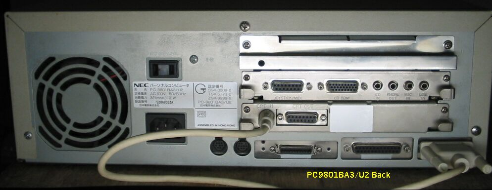

PC9801BA3
PC9801BA3/U2

PC9801BA3の仕様
このPC9801BA3は1995年1月発売で、主な仕様は次のようなものです。
型 名 ：PC-9801BA3U2
価 格 ：138000
CPUクロック ：ライトバックエンハンスド i486DX2-66MHz
ROM ： BIOS及びN88-BASIC(86)96KB システムセットアップメニューなど32KB
標準RAM ： 3.6MB
最大ユーザーズメモリ ： 63.6MB
グラフィックVRAM容量 ： 256KB
グラフィックVRAM画素数： 640*400
グラフィックVRAM色数 ： 4096色中16色2画面
サウンドVRAM ： 16KB
テキストVRAM ： 12KB
拡張スロット数 ： 3
ファイルベイ :１スロット(2台目固定ディスクドライブ*3、CD-ROMドライブ、
５インチフロッピィディスクドライブ*4、ミニカートリッジテープドライブの
いずれか1台内蔵可能)
標準実装ドライブ FDD ：3.5インチ3モード対応FDD*2
内蔵インタフェースコネクタ： プリンタI/F RS-232CI/F
：マウスI/F アナログCRTI/F
漢字 ：標準:第一、第二、など約7600字
サウンド機能 ：ビープ音
温湿度 ：10〜35度C 20〜80%(結露なし)
消費電力 標準 (W) ：32
最大 (W) ：110
エネルギー消費効率 (W) ：32
外形寸法 本 体 (mm) (W)：380 (D)：380 (H)：130
キーボード(mm) (W)：439 (D)：183 (H)：31
重量 本体 (Kg) ：6.8
(2003/07/18 記)
PC9801BA/U2
PC9801のページに戻る